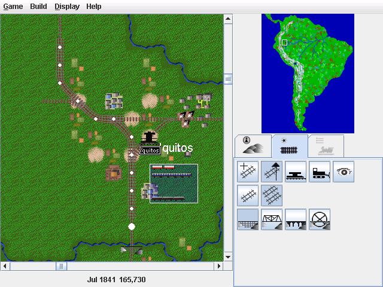

Jfreerails 0.2.6

The screenshot shows one of the new features added to jfreerails 0.2.6. On the
right hand side is the new build tab. The top row of icons are for selecting
the build mode (build track, upgrade track, build station, remove track or view
mode). 'Upgrade track' is currently selected. When it is selected, the 2nd and
3rd rows of icons show the available track and bridge types. The selections
here determine what any bridges and track encountered get upgraded to. You upgrade
a stretch of track by dragging the mouse between two points on the track. If
the mouse button is released, the track along the path between these points
(indicated by the white dots in the screenshot) is upgraded. Track can be removed
in a similar way.